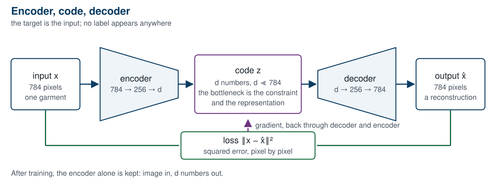
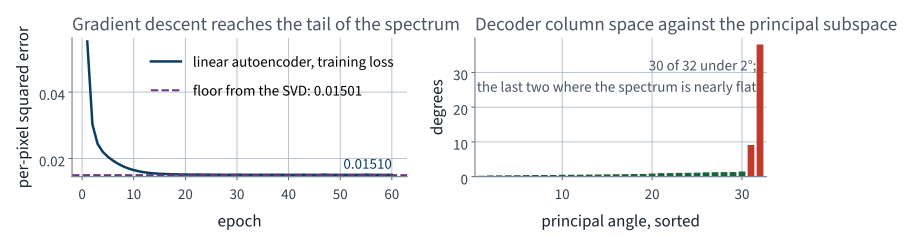
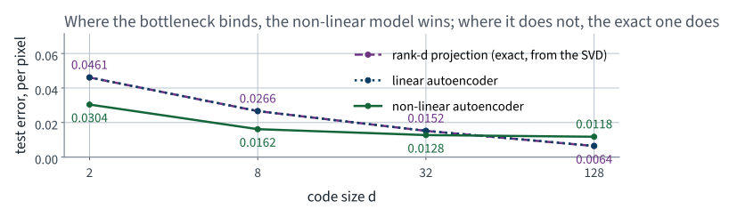
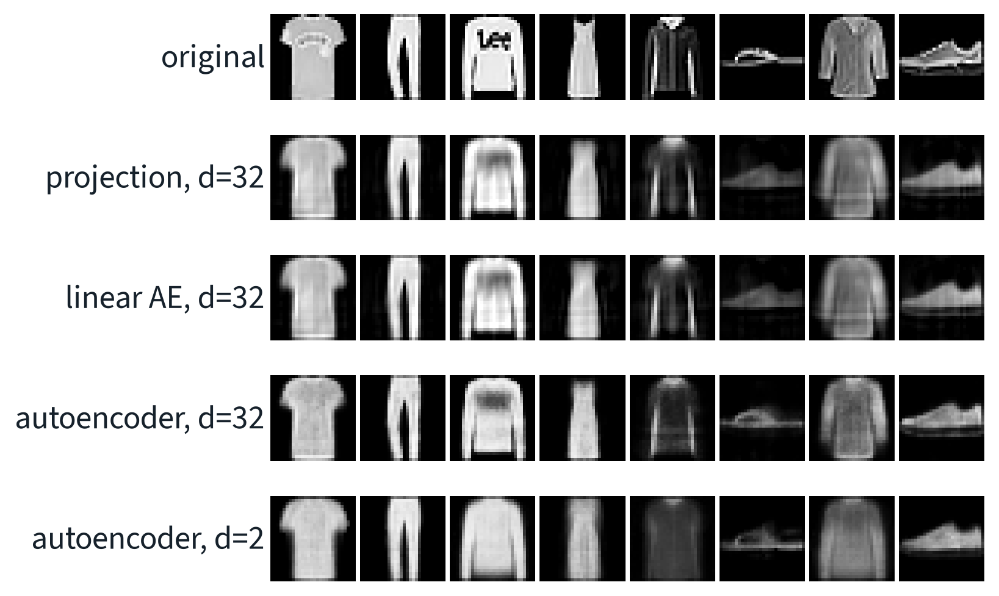
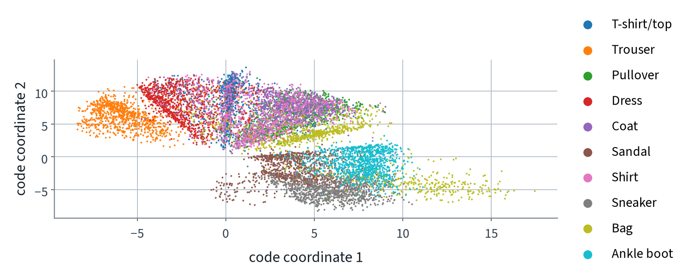
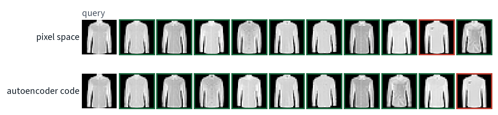
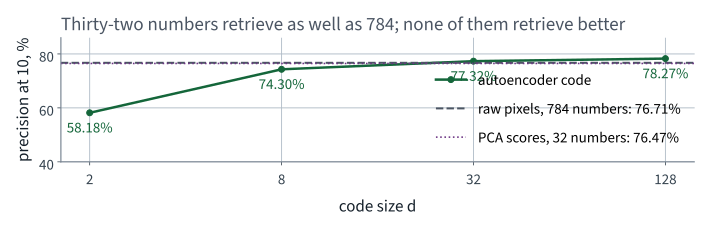
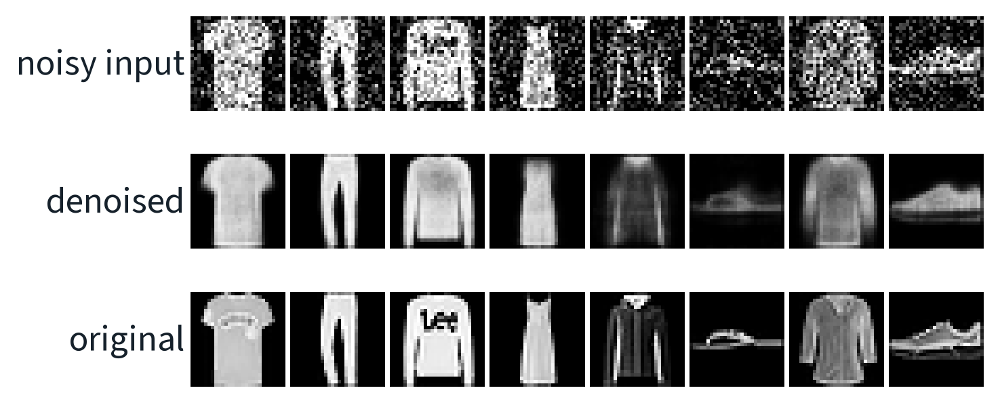
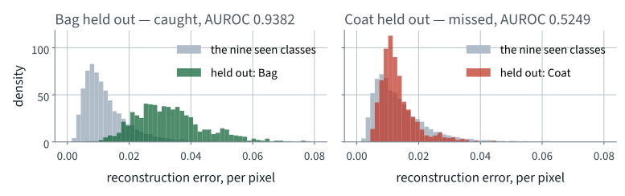

Applications of Machine Learning
BSc Mathematics of Artificial Intelligence · Third year
Where we are
Lecture
What it built
What it needed
7
a first network, and what a layer computes
a label for every image
8
the training loop, written out in five lines
a label for every image
9
a deep network that trains, by initialisation and normalisation
a label for every image
10
a network that stops overfitting: early stopping, weight decay, dropout, augmentation
a label for every image
11
a network that learns from the images alone
no labels
Outside the book
This lecture is taught from its notes rather than from Géron, and is
examined on the same terms as every other. The notes are the primary
source; the deck is the lecture.
Today
The task: a catalogue of photographs and no labels — find the
similar ones, group them, flag the odd ones
The mathematics — a linear autoencoder with
squared loss recovers the principal subspace of Lecture 6
The method — undercomplete autoencoders in
PyTorch; what the loss sees; the code as a representation, measured on
retrieval and clustering; denoising; anomaly detection
The variational autoencoder, for context, and where representations
go from here
Design exercise — a fashion marketplace’s
“see similar” feature, in nine steps, with the pitfalls and
how to address them
A marketplace holds millions of product photographs uploaded by sellers.
The category field is free text, often empty, sometimes wrong. Three things
the product team wants from the photographs alone:
Similar items — given one garment, the ten most
like it, in milliseconds, across the whole catalogue
Groups — a first structure for a catalogue that
has none
The odd ones — uploads that are not what the
catalogue holds, flagged before a shopper sees them
Every method so far needed a label per row. None of
these questions comes with one. The network of today learns from the inputs
by trying to reproduce them.
The data, and the one rule about labels
Fashion-MNIST
Count
Images to fit on
12,000
Validation images
5,000
Test images, the catalogue
10,000
Pixels per image
784
Classes
10
The same split as Lectures 7 and 8, so the numbers
compare. Twelve thousand images are few enough to train every network
here on a CPU.
The labels are loaded, and used for exactly one thingScoring. Nothing is fitted on them. Precision at ten,
the clusters’ purity and the anomaly detector’s AUROC all read the
labels after the fact, to say whether a representation learned without
them means anything.
An autoencoder: compress, then reconstruct

The target is the input. The network is trained to
return what it was given, through a code too small to hold it — so
it has to learn what the images have in common.
$n = 784$ pixels in, $n$ pixels out; $d$ numbers in between —
the code
Squared loss on pixels: the same loss as least squares, with the
input standing in for the label
Trained by the five-line loop of Lecture 8; nothing in the loop
knows there is no label
The whole design question is what stops the network
from learning the identity.
Why a bottleneck: a constraint in the sense of Lecture 10
Lecture 10’s regularisers — weight decay,
dropout, augmentation — all work the same way: they shrink the
set of functions the network can reach, so that fitting the training
data no longer means memorising it. An autoencoder needs the same thing,
for a sharper reason: with $d = n$ the identity is reachable, the loss is
zero, and nothing was learned.
Constraint
What it forbids
Name
$d \ll n$
copying: 784 numbers cannot pass through 32
undercomplete
corrupt the input, keep the target clean
copying: what comes in is not what must go out
denoising
penalise the code
using every coordinate for every image
sparse
Today: the first two. The first is the one the
mathematics is about.
The question for the mathematics
Make the encoder and the decoder linear, keep the
squared loss, and train by gradient descent. What does the network
learn?
The claim
Exactly what Lecture 6 computed with the SVD: the best such network
reconstructs through the projection onto the span of the leading $d$
right singular vectors, and the error it leaves is the tail of the
spectrum, $\sum_{j>d}\sigma_j^2$.
The result is worth having twice over. It says what
an autoencoder is, in the one case where the answer is closed-form; and it
says what the non-linear one is for — the part of the error
that no projection can remove.
Step 1 · The model, with the shapes tracked
examinable
One photograph per row, as in Lecture 6; the data centred on its mean.
No orthogonality, no constraint on $\mathbf{A}$ or
$\mathbf{B}$ at all. Gradient descent sees $2nd$ free numbers.
Step 2 · Every reconstruction lies in a $d$-dimensional subspace
Row $i$ of $\hat{\mathbf{X}}$ is $\mathbf{z}^{(i)}\mathbf{B}$ — a
combination of the $d$ rows of $\mathbf{B}$, with the $d$ entries of the
code as coefficients.
$$\hat{\mathbf{x}}^{(i)} \in S := \operatorname{rowspace}(\mathbf{B}) \subseteq \mathbb{R}^{n},
\qquad \dim S \le d$$
Whatever the encoder does, the decoder can only put a
reconstruction somewhere in $S$. The encoder chooses where; the
decoder fixes the subspace. This is the only place the bottleneck enters
the argument, and it enters as a dimension count.
Step 3 · The closest point of a subspace is the projection
Let $\mathbf{P}_S$ be the orthogonal projector onto $S$.
For any $\mathbf{y} \in S$, split the error into the part orthogonal to $S$
and the part inside it:
where $\mathbf{W}$ is an orthonormal basis of $S$, so that
$\mathbf{P}_S = \mathbf{W}\mathbf{W}^{\intercal}$. If $\dim S < d$, pad
$\mathbf{W}$ to $d$ columns: a larger subspace can only lower the error.
The right-hand side is exactly Lecture 6’s
objective $E(\mathbf{W})$, with $\mathbf{W}^{\intercal}\mathbf{W} = \mathbf{I}_d$.
Step 5 · Recall what Lecture 6 proved about that objective
PCA via the SVD, restated
With $\tilde{\mathbf{X}} = \mathbf{U}\boldsymbol\Sigma\mathbf{V}^{\intercal}$
and $\sigma_1 \ge \sigma_2 \ge \dots$, over all $\mathbf{W}$ with
orthonormal columns,
$$\min_{\mathbf{W}} \bigl\lVert\tilde{\mathbf{X}} - \tilde{\mathbf{X}}\mathbf{W}\mathbf{W}^{\intercal}\bigr\rVert_F^2
= \sum_{j>d}\sigma_j^2, \qquad \text{attained at } \mathbf{W} = \mathbf{V}_d,$$
the first $d$ columns of $\mathbf{V}$.
Seven lines there: Pythagoras turns the error into
$\lVert\tilde{\mathbf{X}}\rVert_F^2 - \operatorname{tr}(\mathbf{W}^{\intercal}\mathbf{C}\mathbf{W})$,
the SVD diagonalises $\mathbf{C} = \tilde{\mathbf{X}}^{\intercal}\tilde{\mathbf{X}}$,
and $d$ units of weight spent on the largest $\sigma_j^2$ maximise the
trace. Nothing in it is needed again today except the result.
Step 6 · The bound is attained by a linear autoencoder
Steps 4 and 5 together: for every $\mathbf{A}$ and
$\mathbf{B}$, $E(\mathbf{A},\mathbf{B}) \ge \sum_{j>d}\sigma_j^2$. Now
choose
The encoder computes the principal components; the decoder
puts them back. The lower bound is reached, so it is the minimum:
$\min_{\mathbf{A},\mathbf{B}} E(\mathbf{A},\mathbf{B}) = \sum_{j>d}\sigma_j^2$.
Step 7 · The subspace is unique; the code is not
At any optimum the reconstruction is
$\tilde{\mathbf{X}}\mathbf{V}_d\mathbf{V}_d^{\intercal}$ — step 3 is
an equality only when $\hat{\mathbf{x}}^{(i)} = \mathbf{P}_S\tilde{\mathbf{x}}^{(i)}$,
and step 5 is an equality only on the principal subspace when the
$\sigma_j^2$ around position $d$ are distinct. But for any invertible
$d\times d$ matrix $\mathbf{T}$,
gives the same reconstruction with a different code,
$\mathbf{Z}\mathbf{T}$. Gradient descent lands on one of these:
the principal subspace, in some basis, not the principal components
themselves.
That is the claim to check numerically: the error,
and the subspace — not the coordinates.
The derivation, in seven lines
examinable
Reproduce this from the statement of the problem, with Lecture 6’s result quoted at line 5.
$E(\mathbf{A},\mathbf{B}) = \lVert\tilde{\mathbf{X}} - \tilde{\mathbf{X}}\mathbf{A}\mathbf{B}\rVert_F^2$, $\mathbf{A}$ is $n\times d$, $\mathbf{B}$ is $d\times n$
the linear autoencoder, unconstrained
$\hat{\mathbf{x}}^{(i)} = \mathbf{z}^{(i)}\mathbf{B} \in S = \operatorname{rowspace}(\mathbf{B})$, $\dim S \le d$
every reconstruction lies in one subspace
$\lVert\tilde{\mathbf{x}} - \mathbf{y}\rVert^2 \ge \lVert\tilde{\mathbf{x}} - \mathbf{P}_S\tilde{\mathbf{x}}\rVert^2$ for $\mathbf{y}\in S$
Pythagoras: the projection is the closest point
$E(\mathbf{A},\mathbf{B}) \ge \lVert\tilde{\mathbf{X}} - \tilde{\mathbf{X}}\mathbf{W}\mathbf{W}^{\intercal}\rVert_F^2$, $\mathbf{W}^{\intercal}\mathbf{W} = \mathbf{I}_d$
sum over rows; $\mathbf{W}$ an orthonormal basis of $S$
$\min_{\mathbf{W}}\lVert\tilde{\mathbf{X}} - \tilde{\mathbf{X}}\mathbf{W}\mathbf{W}^{\intercal}\rVert_F^2 = \sum_{j>d}\sigma_j^2$ at $\mathbf{W}=\mathbf{V}_d$
Lecture 6: PCA via the SVD
$\mathbf{A}=\mathbf{V}_d$, $\mathbf{B}=\mathbf{V}_d^{\intercal}$ gives $E = \sum_{j>d}\sigma_j^2$
the bound is attained, so it is the minimum
$\min_{\mathbf{A},\mathbf{B}}E = \sum_{j>d}\sigma_j^2$, reconstruction through $\mathbf{V}_d\mathbf{V}_d^{\intercal}$; code unique up to $\mathbf{T}$
PCA, reached by gradient descent
What the result buys you
A floor you can compute before training.
$\sum_{j>d}\sigma_j^2$ comes from one SVD. Any linear autoencoder
that reports less has a bug; one that reports much more has not
converged.
A definition of what the non-linear model is for.
Whatever it gains over the floor is the part of the error that no
projection can remove — curvature in the data that a subspace
cannot follow.
The bottleneck is the whole constraint. At $d = n$
the tail is empty, the floor is zero, the identity is reached, and
the code is a rotation of the pixels. Nothing learned, no error
raised.
The code is a representation only up to a change of basis.
Distances in it are not the distances between principal components;
they are those distances under $\mathbf{T}$. Retrieval in a learned
code is retrieval in a metric nobody chose.
Checked numerically: gradient descent reaches the floor

Floor from the SVD 0.01501; the linear autoencoder
after 60 epochs 0.01510. Thirty of the 32 principal angles are under two
degrees. The last two are where $\sigma_{32}^2$ and $\sigma_{33}^2$ differ
by about one percent: the loss barely prefers one direction to the other,
so neither does the optimiser — step 6, seen from inside.
The last row is step 7: the code is not the principal
components, but a linear map of them explains it almost entirely. Same
subspace, different basis.
The projection is computed in closed form; the
network by 60 epochs of Adam on 12,000 images. The derivation says they
must agree, and they do.
$784 \to 256 \to d \to 256 \to 784$; a sigmoid on the output, because
a reconstruction is an image in $[0, 1]$
enc and dec are attributes on purpose: the
code is read by calling the encoder alone
At $d = 32$: 419,120 parameters — the two 784-wide layers are
almost all of them
The loop is the one you already own
for epoch in range(EPOCHS):
net.train()
for xb in batches(X_fit): # no labels in the loader
opt.zero_grad() # 1
out = net(xb) # 2
loss = F.mse_loss(out, xb) # 3 the target is the input
loss.backward() # 4
opt.step() # 5
One change from Lecture 8: line 3 compares the output with
the input. Everything about training deep networks —
initialisation, the optimiser, the schedule, the regularisers —
carries over unchanged, because nothing in it ever depended on the target
being a label.
Twenty epochs of Adam at $10^{-3}$, batches of 128,
12,000 images: a CPU is enough.
Run it at $d = 32$
Model, test error per pixel
Error
Rank-32 projection — the best any linear model can do
0.01519
Linear autoencoder
0.01523
Non-linear autoencoder, 419,120 parameters
0.01275
About a sixth below the floor.
That sixth is the quantity the derivation defined: the
error a subspace cannot remove, which a curved map can. It is the entire
justification for the two ReLU layers.
Training error 0.01188, validation 0.01276: a
small gap, the kind Lecture 10 was about, and small because the bottleneck
is doing the regulariser’s job.
The code size, swept

The linear network tracks the exact projection at every
$d$. The non-linear one wins where the bottleneck binds — and at
$d = 128$ it loses: 0.01179 against 0.00641.
Failure condition — a trained approximation against an exact optimum
The projection is the exact minimum of its class, from one SVD. The
network is a trained approximation to the minimum of a larger
class, and at $d = 128$ its budget — one hidden layer of 256,
twenty epochs — leaves it above what the SVD gets in closed form.
More capacity is not more accuracy until the optimiser has found it.
What the loss sees

Rows two and three are the derivation in pictures: the
same reconstruction. Row five is what two numbers buy.
What the loss cannot see
Squared error on pixels is a distance between two
arrays. It has no idea which pixels matter.
It rewards blur. The average of a class is close, in
pixel distance, to every member of the class. A model short of
capacity reconstructs the average and is scored well for it.
It is blind to a shift. Move a sharp edge one pixel
and the error is large; smear it over three pixels and the error is
smaller. The sharper reconstruction is the worse one, by this loss.
It measures pixels, not garments. A missing button
costs nothing; a slightly different grey over the whole sleeve costs
a lot.
Failure condition — a loss that rewards the average
Reconstruction error falling is not the same as reconstructions
improving. Look at them. A code chosen by the loss alone is a code tuned
to reproduce the common, and the common is what you already knew.
The code as a picture: $d = 2$

Learned without labels; the colour is the label, added afterwards.
The code as a representation
Thirty-two numbers per garment, computed from the pixels, learned from
the pixels. The product questions become geometry in that space:
Question
Operation on the codes
Scored by
similar items
nearest neighbours by Euclidean distance
precision at ten, against the labels
groups
$k$-means with $k = 10$
mean purity of the clusters, against the labels
the odd ones
reconstruction error as a score
AUROC, against a held-out class
Every one of them has a baseline that needs no
learning: the same operation on the 784 raw pixels, and on the 32 PCA
scores. A learned code that cannot beat its own input has learned nothing
the question needed.
Similar items: nearest neighbours, and how they are scored
def precision_at_10(Z): # Z: one row per catalogue image
Zq = Z[q] # 1,000 fixed queries
D2 = (Zq**2).sum(1)[:, None] - 2 * Zq @ Z.T + (Z**2).sum(1)[None, :]
D2[np.arange(len(q)), q] = np.inf # not your own neighbour
nn10 = np.argsort(D2, axis=1)[:, :10]
return (y_test[nn10] == y_test[q][:, None]).mean()
Catalogue: the 10,000 test images; queries: 1,000 of them, each
searching the other 9,999
$\lVert a - b\rVert^2 = \lVert a\rVert^2 - 2a\cdot b + \lVert b\rVert^2$:
one matrix product instead of a loop over queries
Precision at ten: of the ten returned, the fraction
of the query’s class. The label is read here and nowhere else.
One query, ten neighbours, two spaces

Green frames share the query’s class: nine of
ten in both spaces, and largely the same ten images. The code is a
compressed account of pixel distance, not a different opinion about what
is similar — which is the finding of the next slide, in one
example.
Retrieval, measured
Space
Numbers per item
Precision at 10
Raw pixels
784
76.71%
PCA scores
32
76.47%
Linear autoencoder code
32
77.07%
Autoencoder code
32
77.32%
Four spaces within a point of one another.
The code did not beat the pixels, and it could not have:
nothing in the reconstruction loss is about which garments are
similar. What it bought is the second column.
How many numbers a garment needs

Two numbers lose a fifth of the precision; eight
recover most of it; thirty-two match the pixels; 128 add a point. The
representation question is a cost question from eight upwards.
What the code buys: the bill for a catalogue
Per item
Raw pixels
Code
Factor
Numbers stored
784
32
24.5
Multiplications per comparison
784
32
24.5
Bytes, as float32
3,136
128
24.5
A nearest-neighbour search is a comparison against every
item in the catalogue. At equal precision, the factor in the last column
is the factor on the index’s memory and on the query’s cost
— and for a photograph of real size, 28 × 28 becomes
thousands of pixels and the factor grows with it.
The case for a learned representation in a product
is, first of all, this table. Quality is the next lecture’s problem
— and Lecture 23’s.
Groups: $k$-means on the code
Space, $k = 10$
Numbers per item
Mean purity
Raw pixels
784
0.6473
PCA scores
32
0.6471
Autoencoder code
32
0.5891
Purity, from Lecture 6: for each cluster, the share of its
members that belong to its commonest class, averaged over the ten clusters.
Pixels and PCA scores tie; the learned code loses six points —
nothing in the reconstruction loss is about which garments belong together,
and here it shows.
Same lesson as retrieval. The structure $k$-means finds
is the structure the two-dimensional picture drew — footwear,
trousers, bags, torso — and it is in the pixels already. The code
carries it in 32 numbers, at a price the audit shows.
The denoising autoencoder
for xb in batches(X_fit):
xin = (xb + 0.3 * torch.randn_like(xb)).clamp(0, 1) # corrupt the input
opt.zero_grad()
loss = F.mse_loss(net(xin), xb) # the target is clean
loss.backward(); opt.step()
The second constraint from the table: what comes in is not what must
go out, so copying is impossible even with a wide code
Fresh noise on every batch — the same corruption twenty times
over is a fixed dataset, and can be memorised
This is Lecture 10’s augmentation, with the clean image as the
target: a regulariser applied to the training input only
Noisy in, garment out

The network never saw a clean input during training. It
learned what a garment looks like well enough to put one back — a
smooth one, as the squared loss prefers.
Denoising, measured
Error against the clean test image, per pixel
Error
The noisy image itself
0.05264
The plain autoencoder, fed the noisy image
0.02408
The denoising autoencoder, fed the noisy image
0.01551
The denoising autoencoder, fed the clean image
0.01781
Three things in four rows. The bottleneck alone removes
half the noise — noise does not fit through 32 numbers either. Training
on corrupted input removes most of the rest. And the price: on clean input
the denoiser is a worse autoencoder (0.01781 against 0.01275), and its code
retrieves slightly worse, 75.87% against 77.32%.
A regulariser is a trade. The constraint that stops
copying also stops some fitting.
The odd ones: reconstruction error as a score
Train on what the catalogue holds. Score every new image by how badly
it is reconstructed. An image unlike anything in training should
reconstruct badly.
No labels in training, no examples of the anomaly needed —
which is the whole appeal, and the whole risk
To measure it, hold one class out of the fit set, train on
the other nine, and ask whether the held-out class scores high
AUROC
The probability that a random held-out image scores above a random seen
one. 0.5 is chance; 1.0 is a perfect separation. It needs no threshold,
so it measures the score rather than one operating point of it.
Caught, and missed

Bags held out are caught; coats held out are not. A
network that learned pullovers, shirts and T-shirts reconstructs a coat
as well as it reconstructs them.
Ten held-out classes, ten detectors
Held out
AUROC
Held out
AUROC
Bag
0.9382
Sneaker
0.6081
Trouser
0.8674
Pullover
0.5832
Sandal
0.8664
T-shirt/top
0.5549
Ankle boot
0.7982
Shirt
0.5267
Dress
0.6543
Coat
0.5249
The coats’ mean error, 0.01345, is below
the seen classes’ 0.01391. The detector would flag a random
pullover before a coat.
Failure condition — the score measures imitability, not rarity
Reconstruction error says how well the training classes can
imitate an image. A novelty they can imitate is never flagged; an
ordinary image they cannot is flagged every time. Whether this detector
works is a fact about what the anomalies will look like, and it has to
be measured on examples of them.
The three failure conditions, in one place
Condition
What happens
Where it was measured
No constraint on the code
the identity is reachable; zero loss, nothing learned
the floor at $d = 784$ is 0
A trained approximation against an exact optimum
at a wide bottleneck the network sits above the SVD
$d = 128$: 0.01179 against 0.00641
Reconstruction error as an anomaly score
an imitable novelty is never flagged
coats: AUROC 0.5249
And one that is a property of the loss rather than of the
method: squared error rewards the average, so a falling loss is not an
improving reconstruction until you have looked.
The variational autoencoder
beyond the syllabus, for context
The autoencoders so far give one code per image and
nothing in between: decode a point between two codes and there is no
reason the output is a garment. The variational autoencoder
makes the encoder output a distribution, $\mathcal{N}(\boldsymbol\mu(\mathbf{x}),
\operatorname{diag}\,\boldsymbol\sigma^2(\mathbf{x}))$, samples a code from
it, and adds a term that keeps every such distribution close to
$\mathcal{N}(\mathbf{0}, \mathbf{I})$:
$$L = \underbrace{\lVert\mathbf{x} - \hat{\mathbf{x}}\rVert^2}_{\text{reconstruction}}
\;+\; \underbrace{\tfrac12\sum_{j=1}^{d}\bigl(\sigma_j^2 + \mu_j^2 - 1 - \log\sigma_j^2\bigr)}_{\text{KL to the standard normal}}$$
The second term is a regulariser on the code — the
third row of the table on slide 8 — and it fills the code space: a
code drawn from $\mathcal{N}(\mathbf{0}, \mathbf{I})$ decodes to something
plausible, which makes the decoder a generator.
The reparametrisation trick
beyond the syllabus, for context
A sampled code breaks the chain rule of Lecture 8: there
is no derivative of a random draw with respect to the parameters that
chose its distribution. The repair moves the randomness outside the
graph:
$\boldsymbol\varepsilon$ is drawn first and treated as an input;
$\mathbf{z}$ is then a deterministic function of $\boldsymbol\mu$,
$\boldsymbol\sigma$ and $\boldsymbol\varepsilon$
Reverse mode differentiates through $\boldsymbol\mu$ and
$\boldsymbol\sigma$ as through any layer; the draw is never
differentiated
Not examined. It is here because every generative
model you will meet from Lecture 24 onwards contains this move, and because
it is one line.
Where this leads: representations, and what trains them
Representation
Trained by
What distances in it mean
Lecture
PCA scores
the SVD
pixel distance, in the best $d$ directions
6
autoencoder code
reconstructing the input
pixel distance, through a curved map, in a basis nobody chose
11
a classifier’s penultimate layer
labels
whatever separates the classes
13
a dense-retrieval embedding
query–document pairs
relevance
20
a contrastive embedding
pairs that belong together
similarity, as the pairs defined it
23
Today’s code matched the pixels on retrieval and
could not beat them, because the loss never saw a pair. The rest of the
course is, in part, the story of what happens when it does.
Runs on free CPU, and on the CPU by choice: 12,000
images and small networks, and the numbers on these slides are
its run
The floor from the SVD, then the linear autoencoder trained against
it: loss, test error, principal angles, the $R^2$ of the code on the
PCA scores
The non-linear autoencoder, the sweep over $d$, the reconstructions,
the two-dimensional code drawn
Precision at ten and $k$-means in four spaces; the denoiser; ten
anomaly detectors, one per held-out class
What to change
Set NOISE = 0 in the denoising section and run again. The
denoising rows become the plain autoencoder’s, to the digit —
they were always the same model with one line changed.
Design exercise · in the manner of an ML system-design interview
The task: “see similar” on a fashion marketplace
The brief
An online fashion marketplace sells garments listed by thousands of
independent brands and shops. The product is its shopping app; the
feature is a “see similar” strip under every
item page, and a camera search that finds catalogue items like a photo
the shopper took. The users are shoppers; the customers are the sellers,
who pay a commission on every sale. The business measures the
strip’s click-through, the conversion it adds, and the return rate
of what it sells.
Given: millions of seller photographs with an
unreliable category field, the shoppers’ click and purchase
logs, the sellers’ stock and price feeds
Consumers of the output: the strip, the camera
search, and the screening that keeps non-garments out of the
catalogue
Regulators: data protection, for the shoppers’
photographs; consumer protection and brand owners, for what
“similar” may show
Nine steps follow, each with its pitfall; the model at
the centre is today’s code, learned from the photographs alone.
Step 1 — Frame it honestly: a ranking, scored as one
The output is a ranked list of catalogue items for one query image;
the metric is precision at the strip’s length on held-out items,
read beside its anchor: the same strip filled from the query’s
category at random
The label for scoring comes from what shoppers did — items
viewed or bought in the same session — cleaned of the strip’s
own clicks; the seller’s category field is a weak second
source
The baseline before any model: the same category, in stock, most
popular first
Pitfall
Reporting the reconstruction error. It is the training signal, and the
shopper never sees it: a code can reconstruct every photograph beautifully
and return the wrong garments. Score the ranking the product shows, and
report it against the anchor, or the first number will say nothing about
the feature.
Step 2 — The photographs are not as alike as the dataset’s
Pitfall
What happens
What to do
Studio, not garment
sellers shoot on different backgrounds, at different sizes, on or off a model; a code learned from the pixels learns the studio, and the strip returns the same seller’s other items
crop to the garment, resize, normalise the background before anything is fitted; check the strip for seller clumping
Shoppers’ photographs
a camera-search image is personal data, and is nothing like a studio shot
encode on the device or discard after encoding; never keep the photo; train the encoder with camera-style augmentations
Duplicates
the same garment listed by four sellers, and in six colours
link variants to one item before splitting, or the split leaks
Write down what one “item” is before the
first fit. Every later number is a number about that unit.
Step 3 — Split by item, and by seller
Hold out whole items — every photograph and variant of them
— and hold out whole sellers for a second check: the feature has
to work for a shop that joined this morning
Choose the code size, the distance and the ranking rules on the
validation items; read the test items once
Pitfall
A random split over photographs puts the red and the blue of one dress on
both sides. The nearest neighbour of a held-out photo is then its own
item in another colour, precision looks superb, and the number says
nothing about a garment the catalogue has never seen. Split on the item
identifier from step 2, and keep a seller-level split beside it.
Step 4 — Learn the code from the catalogue, and size it by the ranking
Train the autoencoder on the whole catalogue of standardised
photographs — no labels needed, so every listing counts, and a
convolutional encoder once the photographs are real-sized
Read the code from the encoder alone; sweep its size and pick the
smallest that holds the validation precision — the cost
table says why smallest
Denoising and augmentation as the regulariser: the same garment,
shifted, in another colour, on another background, must land on the same
code
Pitfall
Choosing the code size by reconstruction error. It falls at every
increase, forever; the ranking metric flattens early and the index cost
does not. A code sized by the loss is a code sized by the wrong
question, and the bill for it is paid on every query.
Step 5 — The index: codes stored once, searched in milliseconds
Encode every catalogue item once, when it is listed, and store the
code beside it; the query is encoded at request time and compared
against the stored codes, never against the photographs
Exact search is a matrix product at a hundred thousand items; at
millions, an approximate-neighbour index trades a little recall for
a hundred-fold speed, and that recall is measured, not assumed
Normalise the codes to unit length and compare by cosine, so that a
bright photograph is not far from a dark one of the same dress
Pitfall
A distance nobody chose. The code’s coordinates are in a basis the
optimiser landed on, and one coordinate with a large range dominates
the Euclidean distance. Normalise, or whiten against the validation set,
and check that the strip’s neighbours do not all share one bright
background.
Step 6 — Similarity is one feature of the ranking, not the ranking
The strip ranks the nearest hundred by a second model that sees
similarity, stock, size availability, price band, the seller’s
return rate and the shopper’s history — a table, and a
boosted ensemble on it
Business rules sit on top: in stock only, the shopper’s size,
nothing from a seller under review
Pitfall — the look-alike under a brand’s page
Visual similarity is blind to who made the garment. Under a luxury
brand’s listing the strip shows the imitations that look most like
it, the brand — a paying customer — sees its page selling
look-alikes, and the counterfeit complaints land with the regulator.
Brand and seller constraints belong in the ranking layer, and the
similarity model must never be the last word.
Step 7 — Screening uploads by reconstruction error
The same encoder–decoder scores every new upload: a screenshot,
a blank, a photograph of a receipt reconstructs badly and goes to a
review queue before it is listed
Calibrate the threshold per category on the validation items, and
measure the queue’s precision with the reviewers’
decisions
Pitfall
The score follows what the catalogue can imitate. A plain photograph of
nothing reconstructs well and passes; an elaborate, legitimate gown
reconstructs badly and is flagged, and its seller waits a day for a
listing. Route to review, never reject automatically, and read the
detector’s AUROC on the kinds of upload it is meant to catch.
Step 8 — Release, monitor, retrain
Release behind an A/B test on live traffic, read on the strip’s
click-through, the conversion it adds and the return rate of what it
sells, with the sellers’ exposure held fair across both arms
Monitor the distribution of codes as the catalogue turns over with
the seasons; retrain on a schedule and re-encode the whole catalogue
in one atomic swap of the index
Keep a randomised slot in the strip, so that the clicks the next
model trains on are not only the ones this model chose
Pitfall
Two encoders in one index. A retrained encoder puts the same garment at a
different code, so an index holding codes from both versions compares
numbers that no longer mean the same thing, and the strip fills with
garments that are near nothing. Version the encoder with the index, and
never serve a query from one against codes from the other.
Step 9 — Ship it: pipeline and pitfalls
Standardised photographs, variants linked into items →
split by item and seller → autoencoder, code sized on validation
precision → normalised codes, versioned index → ranking with
business rules → review queue → A/B test → retrain, re-encode,
monitor.
Pitfall
Address it by
Reconstruction error as the product metric
precision on the strip against the category anchor
A code that learns the studio
standardised photographs; seller clumping checked
Variants across the split
splitting by item and by seller
Code sized by the loss
the smallest size that holds validation precision
A distance nobody chose
normalised codes, cosine, whitening
Look-alikes under a brand
brand and seller rules in the ranking layer
The screen flags the elaborate, passes the blank
a review queue, calibrated per category, measured
Two encoders in one index
versioned encoder and index, atomic re-encoding
What we did
Trained a network with no labels: compress to a code, reconstruct,
and make the bottleneck the constraint — a regulariser in
Lecture 10’s sense, because without it the identity is
reachable
Derived that a linear autoencoder with squared loss cannot beat the
projection onto the principal subspace, and reaches it: the floor is
$\sum_{j>d}\sigma_j^2$, the subspace is Lecture 6’s, the code
is unique only up to a change of basis — and checked all three
numerically
Built the non-linear one: a sixth below the floor at $d = 32$, and
above the exact projection at $d = 128$, because a trained
approximation is not an exact optimum
Read the code as a representation: 32 numbers retrieve and cluster
as well as 784 pixels, and no better, at a twenty-fourfold saving
— the loss never saw a pair
Denoising as a constraint on the input; reconstruction error as an
anomaly score that catches bags and misses coats, because it
measures imitability
Designed a marketplace’s “see similar” feature in
nine steps — a ranking metric against its anchor, standardised
photographs, a split by item, a code sized by precision, a normalised
versioned index, business rules above similarity, a review queue,
an A/B test — each named for the pitfall it avoids
Not presented — for afterwards
Exercises Lecture 11
five, in the style of the written paper
Exercises — Lecture 11
A linear autoencoder $784 \to d \to 784$ with squared loss is trained to convergence on centred data. State the smallest error it can reach, in terms of the singular values of the centred data, and name the subspace through which it reconstructs. [4]
Two linear autoencoders are trained from different seeds to the same loss, and their codes for the same image differ. State whether this is a bug, and why. [4]
The code size is set equal to the number of pixels and nothing else constrains the network. State what the trained network computes, and what its code is worth as a representation. [3]
Solutions on Lecture 12’s deck.
Exercises — Lecture 11 (continued)
An anomaly detector scores images by their reconstruction error from an autoencoder trained on nine classes; on the tenth, held out, it scores at chance. Explain the mechanism, and say what would be needed to know in advance whether such a detector works. [5]
Nearest-neighbour retrieval in a 32-number autoencoder code scores the same precision at ten as in the 784 raw pixels. State what the code bought, and why it could not have bought more. [4]
Solutions on Lecture 12’s deck.
The five set at the end of Lecture 10
Solutions Lecture 10
not part of this lecture
Solutions — Lecture 10
1. A hidden unit's activations $a_j$ feed a pre-activation $z = \sum_j w_j a_j$. Dropout keeps each unit with…
$\mathbb{E}[\tilde z] = \sum_j \mathbb{E}[m_j]\, w_j a_j = (1-p)\, z$; inverted dropout divides the kept activations by $1-p$ during training, so $\mathbb{E}[\tilde z] = z$ and the unmasked network at test time is the expectation.
The masks are independent Bernoulli$(1-p)$ and the weights are fixed, so the expectation passes through the sum
Without the division every pre-activation at test time is $1/(1-p)$ times larger than anything the weights were trained on
2. Dropout preserves the expected pre-activation. Show that it does not preserve the second moment, give the…
$\mathbb{E}[(m_j a_j/(1-p))^2] = a_j^2/(1-p)$ because $m_j^2 = m_j$: each dropout layer multiplies the second moment by $1/(1-p)$, so twenty layers multiply it by $(1-p)^{-20}$ — dropout goes on the top layer or two, not on every layer.
$m_j \in \{0, 1\}$, so $\mathbb{E}[m_j^2] = \mathbb{E}[m_j] = 1-p$, and dividing by $(1-p)^2$ leaves $1/(1-p)$
A factor applied once is a regulariser; the same factor applied twenty times is noise the network must learn through
Solutions — Lecture 10 (2)
3. Add $\tfrac{\lambda}{2}\lVert\theta\rVert^2$ to the loss and write one gradient-descent step. Then say what…
$\theta \leftarrow \theta - \eta(\nabla L + \lambda\theta) = (1-\eta\lambda)\,\theta - \eta\nabla L$: shrink every weight by $1-\eta\lambda$, then step. Inside Adam the $\lambda\theta$ term is divided by the running gradient scale like everything else, so the decay is scaled away; AdamW applies the factor $1-\eta\lambda$ outside the adaptive step.
The gradient of $\tfrac{\lambda}{2}\lVert\theta\rVert^2$ is $\lambda\theta$
Adam divides each coordinate's step by its gradient history, so a penalty inside the gradient no longer scales with the weight
4. A colleague trains for fifty epochs, keeps the weights of the epoch with the highest validation accuracy, and…
Right: the epoch is chosen on the validation set, and the best epoch's weights are kept rather than the last. Wrong: the reported number is the one that chose the epoch, so it is optimistic; report the test accuracy of the kept weights, read once.
The maximum over fifty validation readings is biased upward by the selection
The test set exists to be read after every choice has been made
Solutions — Lecture 10 (3)
5. Six values of a weight-decay knob are tried, each run read at its best validation epoch. The value with the…
$t_t - t_v \ge 0$ always, with equality when the two choices coincide; the bias is the gap between the maximum of several test readings and one test reading, and it is invisible from a single number because both are accuracies on the same set.
$t_t$ is by construction the largest test accuracy in the table, so it cannot be below any other entry, $t_v$ included
More candidates can only raise a maximum, so the bias grows with the size of the search and nothing in the reported figure records that size
Lecture 12 · Géron Ch. 12
Convolutional networks
Why a dense layer is the wrong shape for an image
Weight sharing and equivariance, derived
A network that sees Flowers102 at its real size